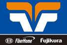

Partners
-
www.vocomfiber.com
Vocom International Telecommunication,Inc
-
www.fiberhomegroup.com


The cable consists of loose tubes (or some fillers) stranded around the non-metal central strength member (FRP), PE extruded as inner sheath, then an amount of Kevlar yarns applied and PE extruded as outer sheath. The loose tube is made of good temperature property material. A number of single mode fibers are secondary coated into the loose tube with suitable excess length and tube filled with moisture-proof compound. All the interstices of cable core are filled with water blocking compound..

The fibers, 125μm, are positioned in a loose tube made of a high modulus plastic. The tubes are filled with a water-resistant filling compound. A Fiber Reinforced Plastic (FRP) locates in the center of core as a non-metallic strength member. The tubes (and fillers) are stranded around the strength member into a compact and circular core. After the cable core is filled with the filling compound to protect it from water ingress, the cable is completed with a PE sheath
Loose Tube Gel-Free Interlocking Armored Cables are flame-retardant, indoor/outdoor, plenum-rated cables for interbuilding and intrabuilding backbones in aerial, duct and riser applications. Encased in a spirally wrapped, aluminum interlocking armor for ruggedness and superior crush resistance, these cables are ideal for industrial and heavy traffic areas and installations requiring extra protection for optical cables and for high-fiber-count trunking applications in areas with limited conduit or vault space. The plenum rating precludes the need for a transition splice when entering the building..

The fibers, 250µm, are positioned in a loose tube made of a high modulus plastic. The tubes are filled with a water-resistant filling compound. A Fiber Reinforced Plastic (FRP) locates in the center of core as a non-metallic strength member. The tubes (and fillers) are stranded around the strength member into a compact and circular core. The cable core is protected from
As fiber ribbon cable is easy in identification, branching, and maintenance and it saves splicing time and reduces project cost, the cable is widely applied in Access networking (especially in FTTC and FTTB applications), interoffice connection and CATV networking.
The cable consists of loose tubes (or some fillers) stranded around the central strength member(metal or FRP), outside cable core, corrugated steel( or aluminum) tape or non-tape longitudinal folded and PE extruded as outer sheath. The tube is made of good temperature property material. A number of single or multi-mode fibers are secondary coated into the loose tube with suitable excess length and tube filled with moisture-proof compound. All the interstices of cable core are filled with water blocking compound.
Vocom Fujikura Fiberhome